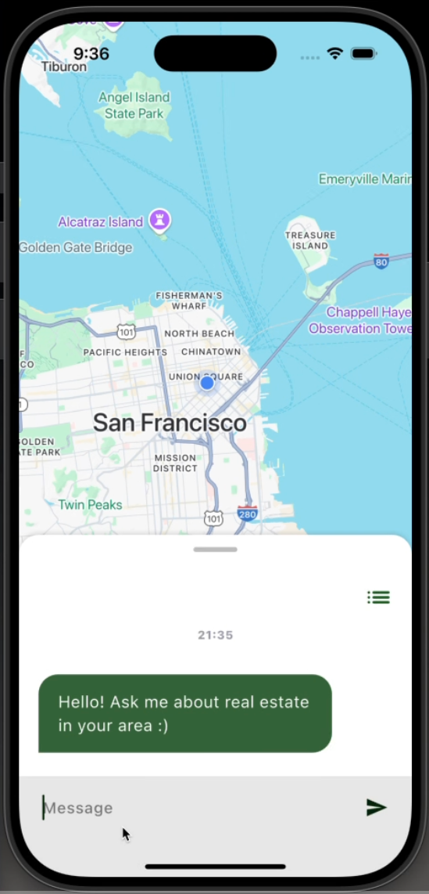
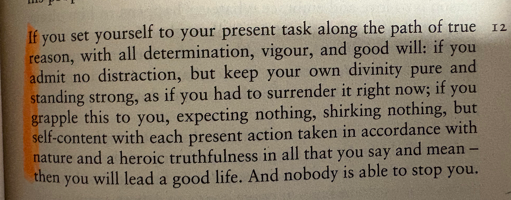

May 2025
So I made an App!
so i made an app
I spent the past month or so working on an App that finds real time property listings using natural language quries.

I learned a lot from a technical standpoint about different frameworks and how they mesh, but by far, the most profound thing I learned was how to approach building projects.
Here are some of the biggest things I learned:
1. Small pieces:
Setting a big goal is important. It's exciting. It keeps you up at night dreaming. It wakes you up in the morning. Unfortunately, this is not enough to keep someone motivated through a big project. Big goals alone are perishable; they can change circumstantially and lack solid foundations. And this was one of the biggest pitfalls I faced early on in the development of this app. I had a fairly big goal, which kept me excited, but it brought me to a situation where, even after 10-hour sessions of building the app, I wouldn't feel a thing.
Upon more introspection, I can draw so many parallels to my worst robotics season, where every day we would have the goal of competing in the championship events, and we failed to set small goals. On the other hand, our best season was marked by our team and me going in every day, not thinking past the current week. Setting goals, small enough to be done within a couple of days, but hard enough to be a challenge. These very goals allowed us to take our robot to heights I have never seen it reach before. Although I knew all this before, I wasn’t able to truly piece together the importance of it until I built this app. I also learned that the correct word for my epiphany is ‘milestone’, and a project immediately has a higher probability of success when it is characterized by small intentional milestones that lead to a goal.
There is one more piece to this puzzle that I believe is crucial in the overall process of building something, and I am unsure of the word, so I’ll call it ‘versions’. Milestones are imperative, but they, too, can get exhausting when a result can not be seen in due time. A big goal is big for a reason; it's ambitious, hard to reach, and it's exciting. It can take years to see this goal come into fruition. A version is my idea of what fills the gap between a milestone and a big goal. Milestones should build up to a completed version. A fully operational version of the product that might not be anywhere near the scale of the big goal, but regardless, it's a checkpoint.
I know I was throwing some words around too much. Here's a summary:
Milestone: A small task, able to be completed within 3–4 days.
Version: A scaled-down version of the bigger goal, encompassing a certain aspect of the finished product.
Big Goal: An ambitious, exciting and important goal.
2. Get feedback and reiterate as fast as possible:
A trap I fell into early on while building this app was immediately trying to build something perfect. This caused me to never actually come to a point where I would release something, just stuck in a constant cycle of trying to perfect every small thing. On top of all this, I never really sought feedback from an array of individuals. I only ever asked one of my mentors for feedback now and then, which I now know wasn’t enough.
I recently heard this quote from Brian Chesky, I’ll paraphrase it: When you're building a product, you don't need a million people to use it and like it; all you need is 100 people who really love your product. Develop your product around these 100 people, and it will naturally grow outwards.
I thought this was really insightful, seeking advice and revoluting your product around about 100 people is the most efficient way to build a useful product.
3. Put 100% in whenever you sit down to work:
My workflow changed a lot during building the app, at the start, I worked non-stop on the app for about two weeks. No distractions, no nothing, I would put 100% in whenever I sat down, and this was a very productive time for me. Afterwards, I stopped putting in 100% every time I sat down, I think this is because I slowly burned out. At the time, I thought the solution was to just put in more hours, but I knew I wasn’t making as much headway as I wanted to.
After a conversation with a mentor who expressed the importance of putting in 100% when you do work and also finding time to cool down and relax, I tried to set aside small amounts of time to work on the app. And contrary to what I previously thought, less time but going at 100% was way more productive than any other method.
100% for 4 hours > 50% for 12 hours
Overall, building this app has been transformative in how I am going to go about building projects. Special thanks to my mentors for all the feedback and advice!
Thank you for reading. To end, I will leave you with a passage from Meditations by Marcus Aurelius, a book I am currently reading:
